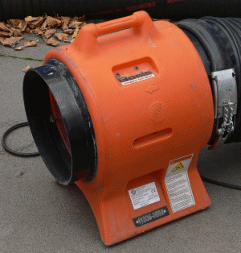

Wegen der Gefahr durch gesundheitsschädlichen Staub, der durch die Behandlung
der Oberflächen des Strahlgutes und/oder aus dem Strahlmittel entstehen kann,
sind folgende Anforderungen zu erfüllen:
Der Strahlraum muss so verschlossen sein, dass Staub und Strahlmittel
nicht austreten können. Hierzu muss in dem Strahlraum ein Unterdruck
von 20 Pa vorhanden sein, oder es muss sicher gestellt sein,
dass in allen Öffnungen eine nach innen gerichtete Strömung vorhanden ist,
die auf den 5-fachen Luftwechsel pro Stunde ausgelegt ist
(mittl. Strömungsgeschwindigkeit im Öffnungsquerschnitt zwischen 0,5 und 2,0 m/s).
Solche Einrichtungen können z.B. Einzeltungen, Einhausungen oder Abplanungen sein.